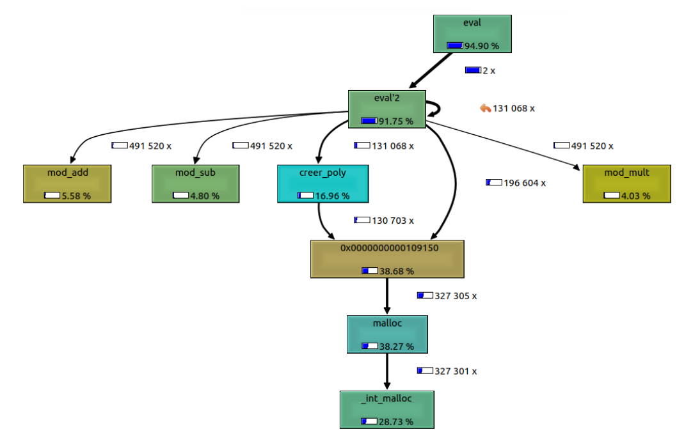

Fast Fourier Transform
Sorbonne Université
Team of 2
Jan 2022 ~ July 2022
C
This is an HPC implementation of the Fast Fourier Transform (FFT).
The goal of this project was to compute the product of two polynomials in Z/pZ using the FFT. The project heavily focused on Optimizing our code, we used optimization tools such as GProf to do Code Profiling.

For example, in the image above, we can directly see that the malloc() function was taking more than 38% of the execution time, which is a lot. Knowing where a major optimization could be made, we quickly found a way to not use malloc() in our FFT, gaining precious execution time.Furthermore, we used Vectorization with Intel's AVX2 Intrinsics, which allowed us to perform calculations in parallel. For instance, our vectorized FFT ran twice as fast as our non-vectorized version.
This project greatly changed my programming mindset, leading me to consistently question the efficiency of my code. For more details about this project, please refer to our Project Report and Defense Presentation.